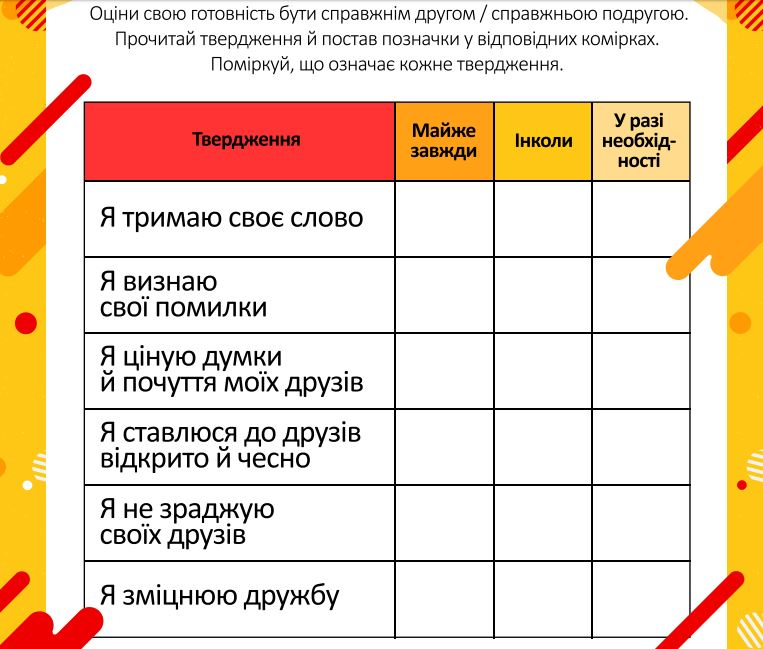
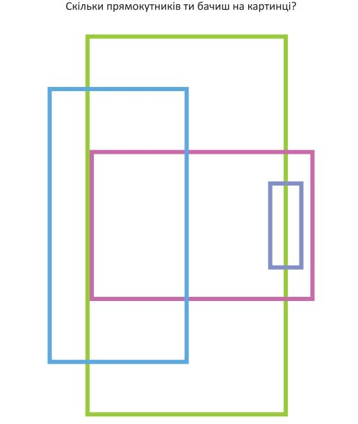

Вправа-побажання “Скажи приємне другові”.
Вправа-пантоміма “Зрозумій без слів”. Діти спілкуються жестами, виконують жартівливі прохання одне одного.
Діалог-міркування “Хто такий друг?”.
Вправа-рефлексія “Подякуй другові за…”. Малята стають у коло, і кожен дякує за щось сусідові.
Створюємо разом білий вірш про друга. Педагог пропонує першу фразу: “Людина без друга…”. Діти по черзі продовжують думку, доповнюючи фразу: “…мов соловейко без голосу” тощо.
Корисні завдання
Це завдання допоможе дитині осмислити поняття «дружба». Дитині потрібно прочитати й поміркувати над значенням тверджень, що характеризують поняття «дружба»: «Я тримаю своє слово», «Я визнаю свої помилки», «Я ціную думки й почуття моїх друзів», «Я ставлюся до друзів відкрито і чесно», «Я не зраджую своїх друзів», «Я зміцнюю дружбу». Дитині пропонується оцінити свою готовність бути справжнім другом/справжньою подругою, поставивши позначки у відповідних комірках. У процесі виконання такого завдання дитина зможе замислитися про цінності дружби, розвиватиме вміння аналізувати, емоційний інтелект і мовленнєву компетентність.
Це завдання-головоломка допоможе дитині потренувати увагу, логіку та зорову пам’ять, а також добре вивчити таке геометричне поняття, як прямокутник, навчившись вирізняти його навіть у складних перетинах фігур. На перший погляд здається, ніби в завданні накреслено лише чотири прямокутники. Але дитина повинна проявити кмітливість і здогадатися, що перетини даних геометричних фігур утворюють нові прямокутники, які вона й повинна порахувати. Усього після підрахунку має бути вісімнадцять прямокутників.
Родичі котиків та песиків (до с. 24-25 підручника)
Більше дізнаємося про наших домашніх улюбленців